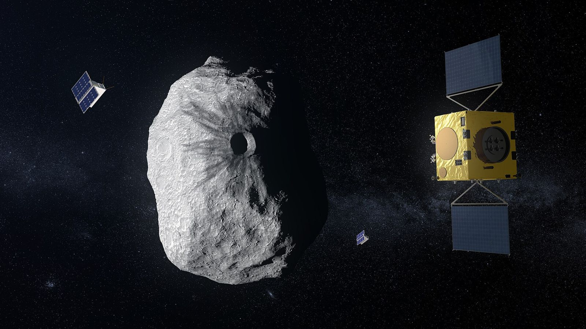
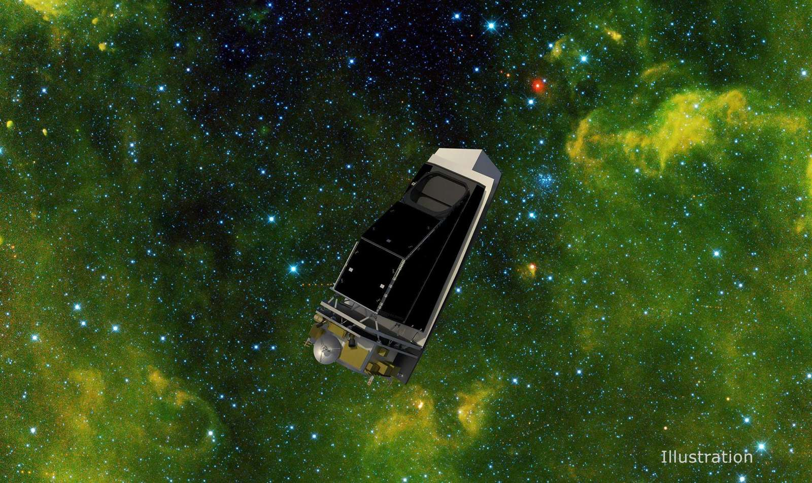

Planetary defense solutions

Hera (ESA)
Europe's planetary defender is flying to the only asteroid whose orbit humans have measurably changed. It arrives at Didymos and its moon Dimorphos in November 2026 to measure what NASA's DART impact really did.
What are the Hera Five W's and impact statement?
Source: ESA, Hera targets early arrival

NEO Surveyor (NASA)
The first space telescope built specifically to hunt hazardous asteroids and comets, including the dark ones and the ones hiding in the Sun's glare. Launch no earlier than September 2027.
What are the NEO Surveyor Five W's and impact statement?
Source: NASA, NEO Surveyor

Webb and asteroid 2024 YR4
In February 2026 the James Webb Space Telescope tracked a faint 60-meter asteroid two years before ground telescopes could, and ruled out a 2032 impact on the Moon.
What are the Webb and 2024 YR4 Five W's and impact statement?
Source: NASA Planetary Defense blog

Jupiter (natural)
The solar system's biggest natural debris catcher. Comet impacts are thought to happen over 2,000 times more often on Jupiter than on Earth, with honest trade-offs for asteroids.
What are the Jupiter Five W's and impact statement?
Source: The Planetary Society